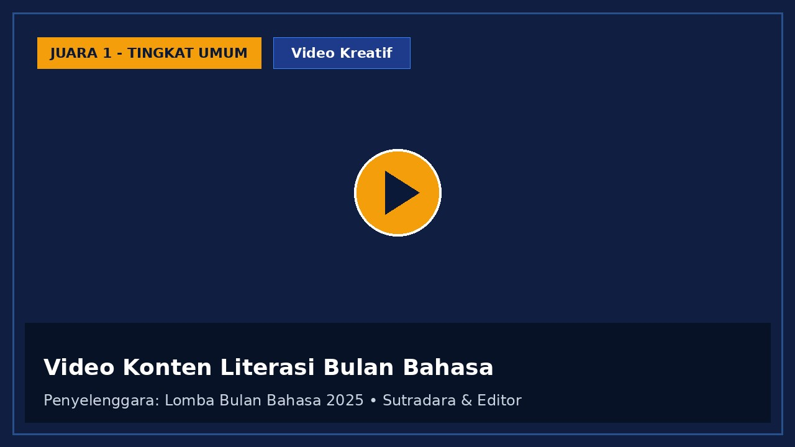
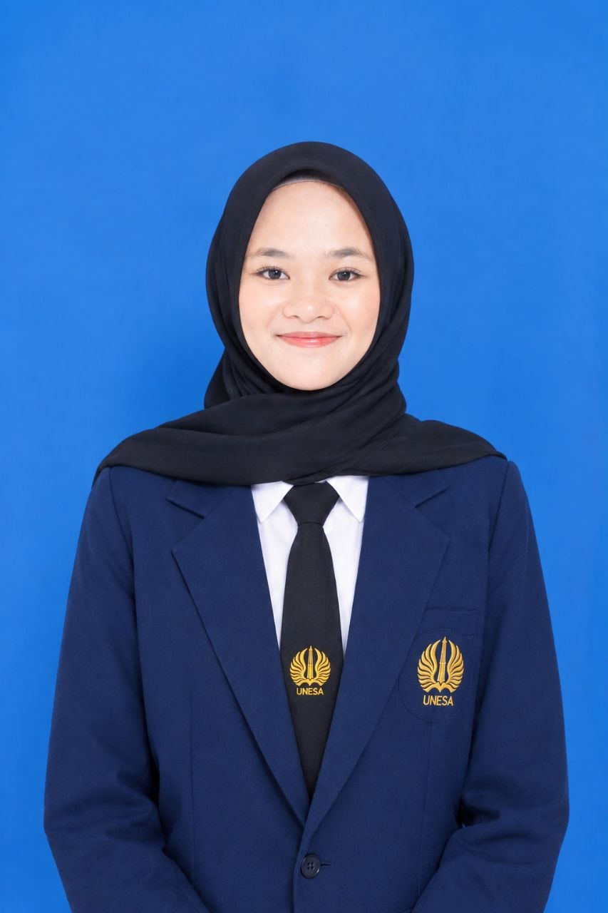
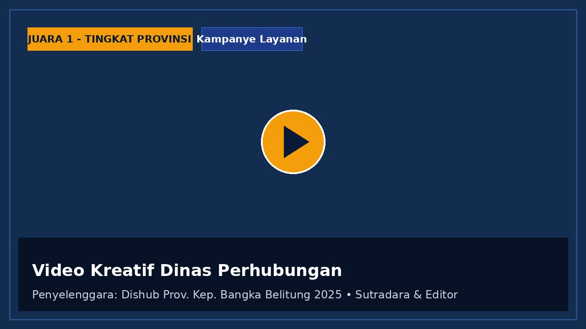
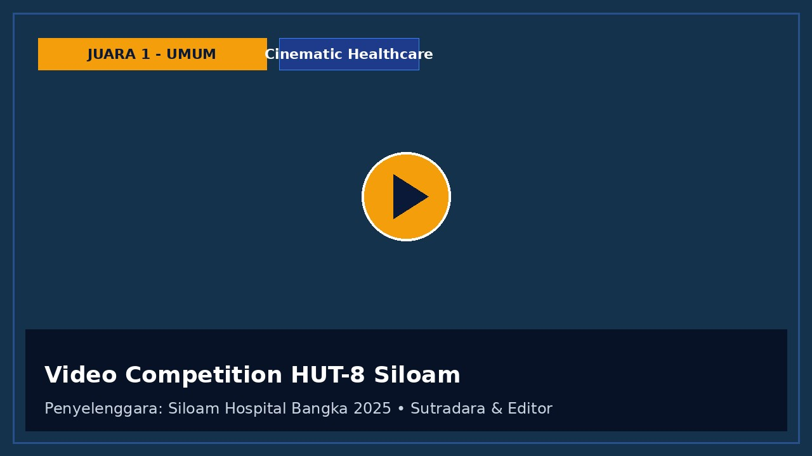
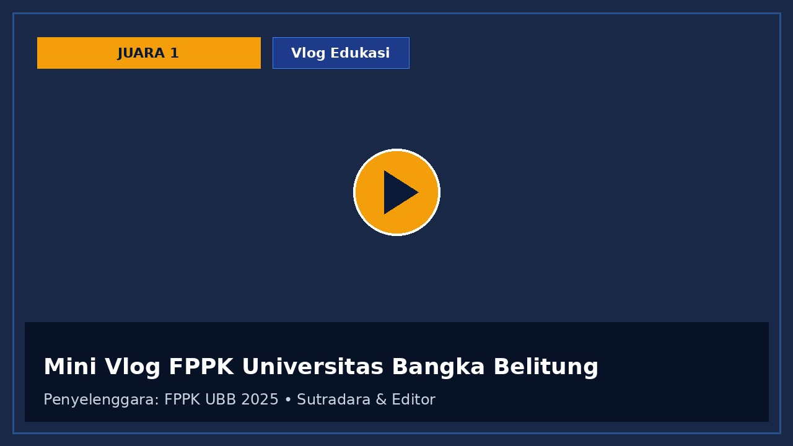
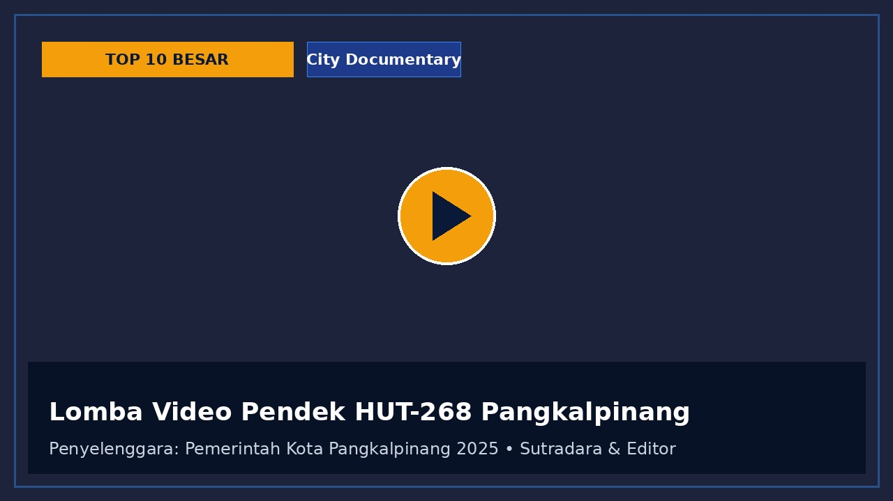
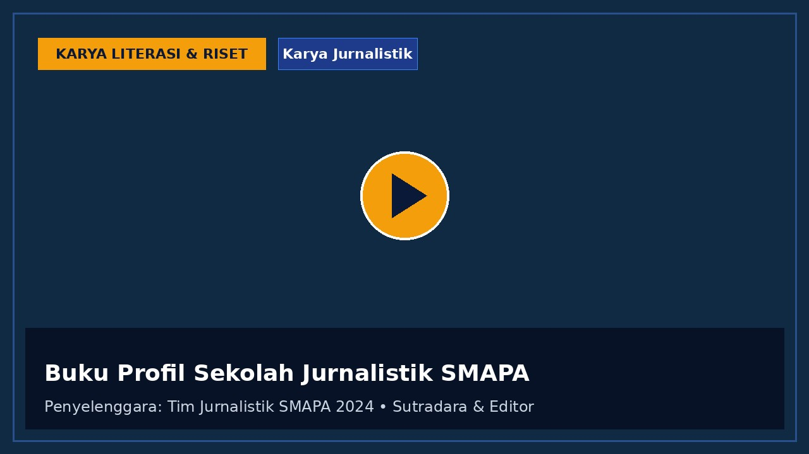

Juara 1 Bulan Bahasa
Video Kreatif • 2025
Video Konten Literasi Bulan Bahasa
Menggugah kesadaran membaca melalui metafora visual dan narasi puitis yang menyentuh generasi muda.
Jurnalis & Kreator Konten
Mahasiswa S1 Pendidikan Teknologi Informasi, Universitas Negeri Surabaya. Berdedikasi dalam produksi video kreatif, liputan jurnalistik berbobot, serta kepemimpinan tim organisasi kampus.

S1 Pendidikan Teknologi Informasi
Universitas Negeri Surabaya (2026–Sekarang)
Mahasiswa aktif dengan minat besar di bidang jurnalistik, konten kreatif, dan organisasi. Berpengalaman sebagai Wakil Ketua Jurnalistik serta aktif dalam berbagai kepanitiaan sekolah dan universitas.
Terbiasa bekerja dalam tim, mengelola kegiatan berskala besar, dan menghasilkan karya kreatif yang berdampak. Memiliki sejumlah rekam jejak prestasi lomba video tingkat kota dan provinsi, serta konsisten mengikuti berbagai workshop dan pelatihan jurnalistik demi mempertajam sudut pandang editorial dan daya cipta visual.
Terus mengembangkan keterampilan komunikasi, kepemimpinan, dan kreativitas untuk siap berkontribusi optimal dalam seleksi kepengurusan organisasi kampus, magang industri media, maupun program beasiswa prestasi.
Fondasi akademik berjenjang yang membentuk pola pikir terstruktur, kemampuan literasi, dan keahlian teknologi informasi.
S1 Pendidikan Teknologi Informasi
Fakultas Teknik. Mendalami rekayasa sistem informasi, media pembelajaran digital, komputasi edukasi, serta aktif dalam kepengurusan dan divisi PDD video angkatan 2026.
Sekolah Menengah Atas
Menjabat sebagai Wakil Ketua Jurnalistik SMAPA periode 2024–2026. Meraih sederet juara video tingkat kota dan provinsi, serta memimpin penulisan buku profil jurnalistik sekolah.
Sekolah Menengah Pertama
Aktif dalam kegiatan literasi sekolah, kegiatan seni kreativitas siswa, serta kepanduan dan komunikasi kepemudaan.
Sekolah Dasar
Menyelesaikan pendidikan dasar dengan pembekalan budi pekerti, literasi dasar membaca-menulis, serta kegiatan ekstrakurikuler sekolah.
Pembuktian kompetensi nyata di bidang videografi, daya cipta konten literasi, dan komunikasi visual yang diakui instansi pemerintah, universitas, hingga sektor medis.
Kategori: Tingkat Umum
Merancang video kampanye literasi berdurasi pendek dengan storytelling mendalam mengenai peran literasi pemuda di era disrupsi informasi digital.
Dinas Perhubungan Provinsi Kep. Bangka Belitung
Menghasilkan video kreatif edukasi keselamatan berkendara dan kesadaran fasilitas transportasi umum provinsi dengan visual dinamis.
Siloam Hospitals Bangka (Kategori Umum)
Kompetisi video bertema dedikasi pelayanan kesehatan, empati medis, dan sinergi teknologi rumah sakit untuk masyarakat Bangka.
FPPK Universitas Bangka Belitung (UBB)
Format vlog interaktif dan edukatif seputar potensi kelautan, perikanan, serta pelestarian ekosistem pesisir Bangka Belitung.
Pemerintah Kota Pangkalpinang
Mendokumentasikan sudut historis, kehangatan masyarakat, dan denyut kemajuan tata kota Pangkalpinang dalam medium sinematografi pendek.
Peringatan Hari Perhubungan Nasional 2024
Karya konten video berfokus pada konektivitas antarwilayah kepulauan, dedikasi insan transportasi, dan keselamatan pelayaran.
Kiprah aktif dalam mengelola tim, koordinasi publikasi-dokumentasi (PDD), serta memimpin proyek editorial berstandar tinggi.
Terpilih dalam jajaran Badan Pengurus Harian (BPH) Angkatan 2026 sebagai Bendahara Angkatan Prodi PTI. Bertanggung jawab atas pengelolaan kas keuangan angkatan, transparansi anggaran kegiatan maba, penyusunan rancangan dana kepanitiaan, jaring aspirasi mahasiswa, serta koordinasi keorganisasian antarkelas.
Memimpin konsep produksi video profil angkatan, teaser kegiatan mahasiswa, rekaman aftermovie, serta arsip digital kegiatan akademik.
Memimpin puluhan jurnalis muda sekolah, mengawasi redaksi majalah dinding, buletin sekolah, liputan berita up-to-date, dan memfasilitasi program pelatihan penulisan serta fotografi jurnalistik.
Bertanggung jawab penuh atas produksi video dokumenter kenangan angkatan, sinematografi outdoor, dan editing final.
Mendampingi ratusan siswa baru, mengawal ketertiban agenda orientasi nilai-nilai sekolah, dan mengelola media publikasi.
Mengatur penayangan video flashback kelulusan, siaran langsung proyektor panggung, dan sesi foto booth wisuda.
Mewakili sekolah sebagai jurnalis delegasi untuk meliput kekayaan kearifan lokal, situs geologi Belitung, dan bertukar wawasan redaksi sekolah.
Dokumentasi budaya akulturasi Tionghoa-Melayu, lomba perahu naga, dan produksi konten media sosial promosi pariwisata daerah.
Merancang desain feed publikasi, sorotan pentas seni, dan dokumentasi kilas balik perjalanan almamater.
Mengoordinasikan kegiatan spiritual Ramadan, lomba keagamaan, serta dokumentasi tabligh akbar dan santunan anak yatim.
Mengelola aset foto/video kegiatan sekolah sepanjang tahun 2024 dan memelihara arsip media digital organisasi.
Komitmen berkelanjutan dalam mengasah etika jurnalistik, teknik wawancara investigatif, dan penerbitan karya tulis cetak.
Lembaga Pers & Pelatihan Media
Pendalaman kode etik jurnalistik (KEJ), teknik verifikasi fakta (anti-hoaks), framing berita objektif, dan teknik wawancara narasumber formal.
Fakultas / Humas Universitas Bangka Belitung (UBB)
Pelatihan intensif penulisan rilis pers kampus, manajemen pers mahasiswa, kurasi foto berita jurnalistik, serta teknik storytelling visual.
Tim Redaksi Jurnalistik SMAPA
Program kurasi, penulisan profil tokoh almamater, riset sejarah sekolah, penyuntingan naskah (proofreading), hingga tata letak penerbitan buku profil resmi sekolah.
Koleksi karya video kreatif, liputan jurnalistik, dan dokumentasi visual. Klik setiap karya untuk melihat rincian peran produksi atau putar video.

Juara 1 Bulan BahasaMenggugah kesadaran membaca melalui metafora visual dan narasi puitis yang menyentuh generasi muda.

Juara 1 Dishub BabelKampanye keselamatan jalan raya dan pemanfaatan angkutan umum di Kepulauan Bangka Belitung.

Juara 1 Siloam BangkaVisualisasi empati medis dengan sentuhan human interest yang mendalam dan ritme narasi hangat.

Juara 1 Mini VlogEksplorasi ekosistem bahari dan laboratorium perikanan dikemas secara komunikatif untuk remaja.

Top 10 BesarRekaman visual ritme kehidupan kota Pangkalpinang dari fajar hingga malam hari.

Karya LiterasiPublikasi resmi sekolah yang merangkum sejarah, prestasi siswa, dan rekam jejak kepemimpinan guru.
Terbuka untuk kesempatan bergabung dalam kepanitiaan/organisasi kampus, proyek video kreatif, kepenulisan jurnalistik, magang, maupun beasiswa.
Kirim pesan instan secara langsung untuk keperluan koordinasi cepat, kepanitiaan, atau proyek.
Chat via WhatsAppTersedia email personal serta email akademik resmi SSO Universitas Negeri Surabaya.
Domisili: Surabaya, Jawa Timur
Kampus: Kampus Ketintang / Lidah Wetan, Universitas Negeri Surabaya
Program Studi: S1 Pendidikan Teknologi Informasi (Angkatan 2026)